Tokyo, jour 1
Vous êtes à Narita, terminal 2, et l'hôtel ne vous prend qu'à 16 h. Vous arrivez à Shibuya vers 10 h. Cette page vous dit exactement où mettre les valises dans la gare, puis déroule la balade heure par heure jusqu'au check-in.
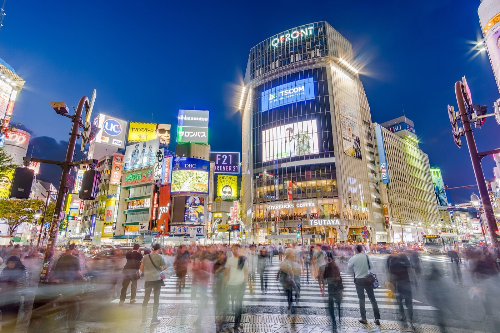
Narita Express, direct jusqu'à Shibuya
Le train s'appelle le N'EX. Il part de la gare « Narita Airport Terminal 2·3 », au sous-sol de votre terminal : suivez les panneaux « Railways ». Pas de changement, il s'arrête à Shibuya.
- Le billet. Au guichet JR (JR East Travel Service Center, à côté des portillons) ou aux machines rouges. Place numérotée, on vous l'imprime. ¥3 330 chacun.
- Pas l'aller-retour à ¥5 200. Il est valable 14 jours, votre vol pour Séoul est le 1er décembre : juste trop tard.
- Un train toutes les 30 minutes environ. Prenez le prochain, il n'y a rien à optimiser.
- Dans le train. Rangez les valises dans l'espace à l'entrée du wagon (il y a un cadenas à code sur le rail). Wi-Fi gratuit à bord.
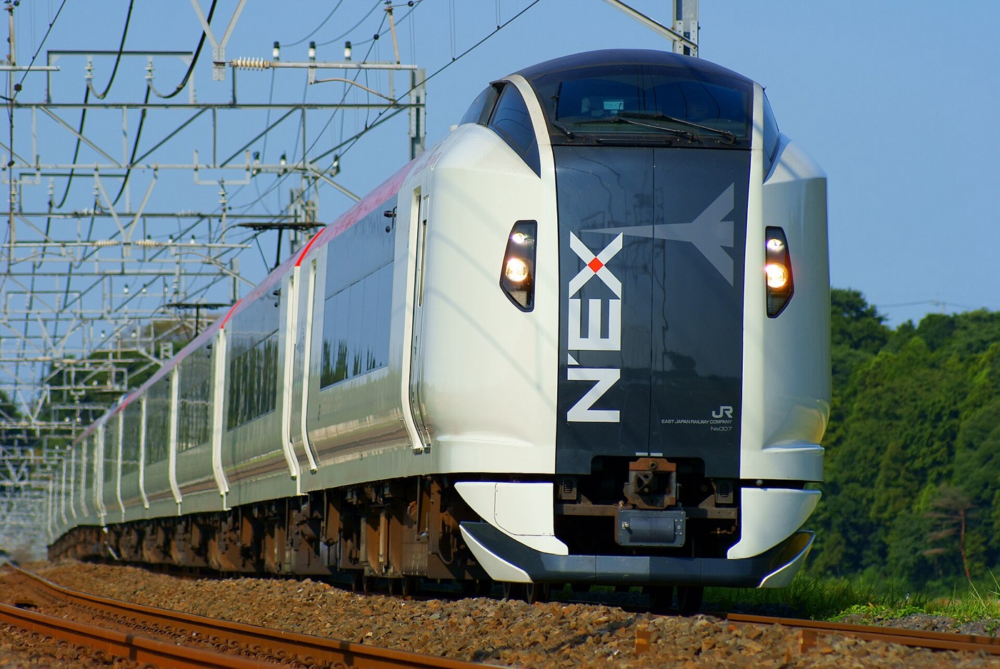
Les casiers de la gare de Shibuya, pas à pas
Il y a plus de mille casiers dans la gare. Les grands, ceux qui prennent une valise de soute, sont dans le passage souterrain Tokyu, appelé Shibuya Chikamichi. À 10 h, la plupart sont libres. Comptez 15 minutes, tout compris.
- 1
Descendre du N'EX, sortie Hachiko
Suivez « Hachiko Exit ». Vous débouchez sur la place avec la statue du chien, face au grand carrefour.
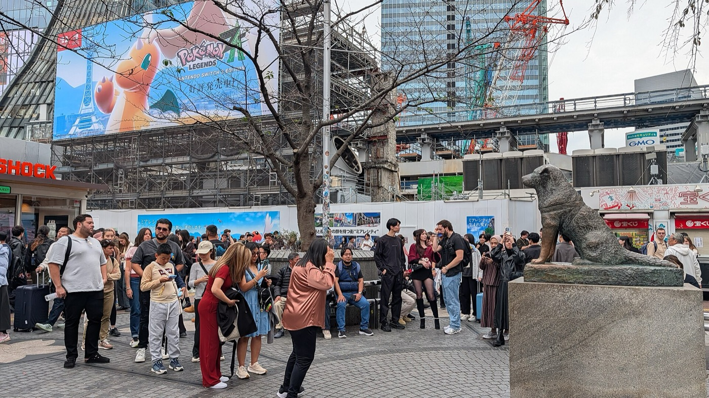
Hachiko. La file, c'est pour la photo avec le chien. Vous, vous passez. - 2
Trouver l'escalator du Shibuya 109
Le 109, c'est l'immeuble cylindrique argenté de l'autre côté du carrefour, à gauche. À son pied, un escalator descend au sous-sol B1.
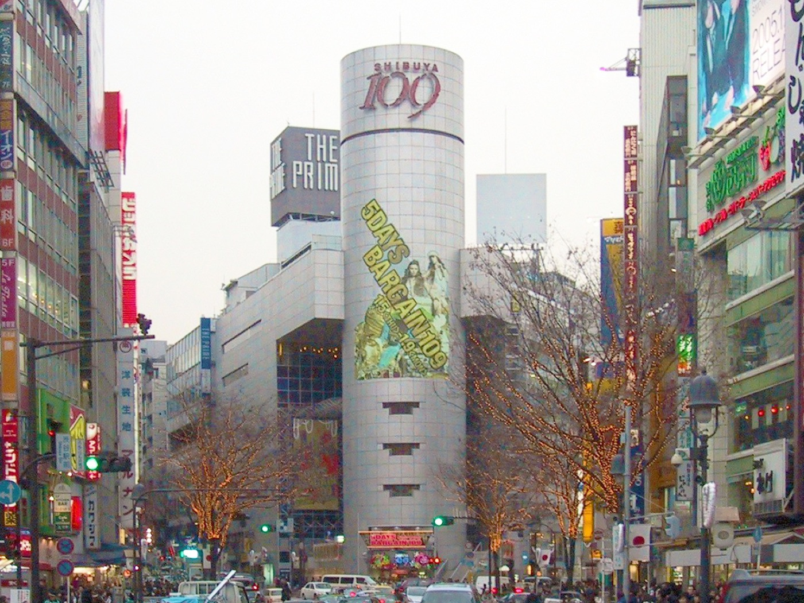
Le Shibuya 109. L'escalator vers les casiers est à sa base, côté carrefour. - 3
B1 : casiers « A1 » et « B », B2 : casiers « A2 »
En bas de l'escalator, tournez à gauche : les casiers marqués d'une lettre sont là. Les très grands (84 à 113 cm de haut, une valise de soute debout) sont les plus souvent libres, surtout les « A2 » un étage plus bas.
- 4
Payer, garder le reçu
Suica dans Apple Wallet, carte bancaire ou pièces. Le casier imprime un reçu avec un code ou vous donne une clé : photographiez-le tout de suite. Le prix couvre la journée.
Shibuya, version tech, heure par heure
Tout est à moins de 10 minutes à pied des casiers. Six heures, cinq lieux, zéro métro.
- 10 h 00
Arrivée à Shibuya
Sortie Hachiko, puis les casiers du passage souterrain (étape 2). À 10 h 15 vous êtes libres.
- 10 h 20
Le Scramble Crossing et Hachiko
Le carrefour le plus traversé du monde, 3 000 personnes par feu vert. Montez au Starbucks du bâtiment Tsutaya pour le voir d'en haut, un café à la main.
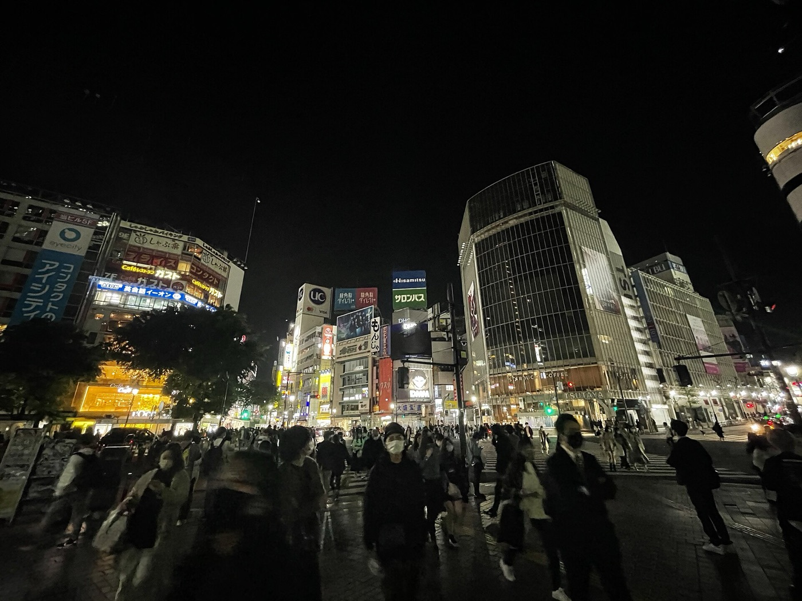
Le carrefour vu du sol. Le Starbucks est dans l'immeuble Tsutaya, juste en face de la gare. Plan B, si le Starbucks est bondé : le Sky Lobby au 11e étage de Shibuya Hikarie (gratuit, sans réservation, collé à la gare côté est) donne la même vue plongeante sur le carrefour, sans la file. - 11 h 00
Shibuya Sky
Le toit du Scramble Square, 230 mètres, à ciel ouvert. Le plus beau point de vue de Tokyo, et en fin de matinée il y a moins de monde qu'au coucher du soleil. Réservez le créneau de 11 h en ligne dans le train, les billets sur place partent vite. Sacs à dos dans les casiers du 46e.
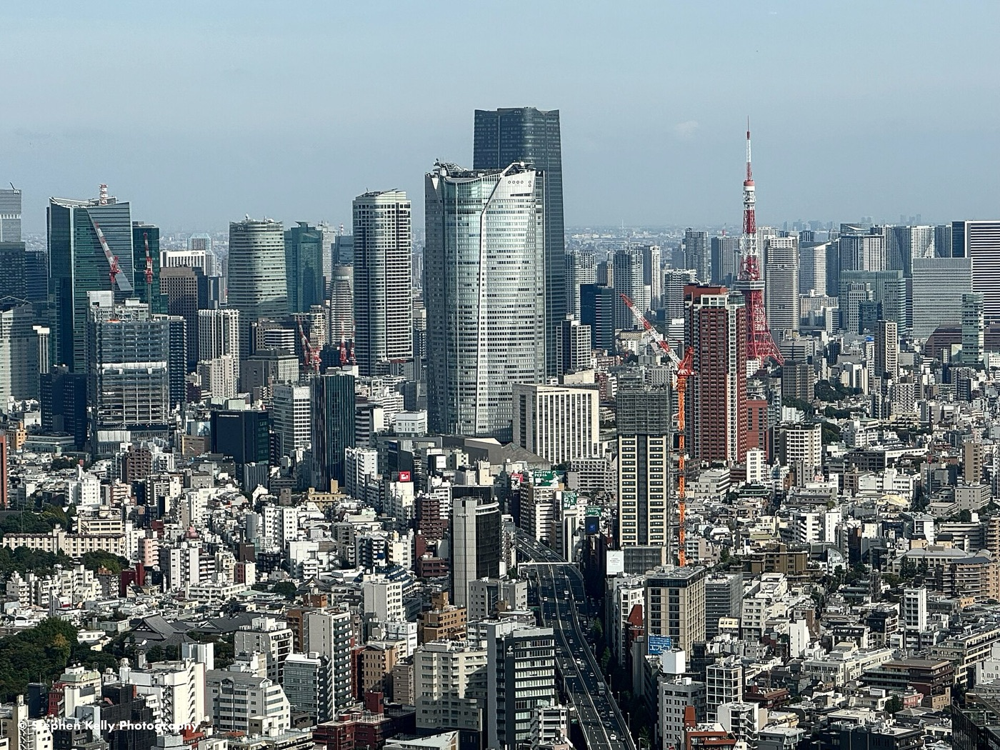
Depuis Shibuya Sky : la Tokyo Tower à droite, et par temps clair le mont Fuji à l'opposé. Plan B, si c'est complet ou couvert : gardez Shibuya Sky pour un coucher de soleil plus tard dans la semaine (créneau 16 h, le plus demandé : réservez 3 jours avant). Aujourd'hui, montez au Sky Lobby de Hikarie (11e, gratuit), puis passez directement au PARCO à 11 h. - 12 h 15
Shibuya PARCO, 6e étage
Le cœur geek du quartier sur un seul étage : Nintendo Tokyo, le Pokémon Center, le Capcom Store et le Jump Shop. À 5 minutes à pied du Scramble Square.
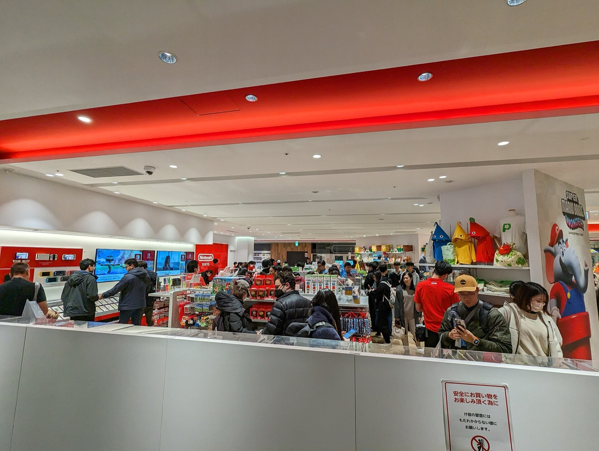
Nintendo Tokyo, PARCO 6e. Le Capcom Store est à vingt mètres. Plan B, si la file Nintendo dépasse 30 minutes : faites d'abord le Capcom Store et le Pokémon Center, puis Shibuya Loft (7 étages de gadgets et de design japonais, 3 minutes à pied) et Tower Records (9 étages de musique, en face). Revenez chez Nintendo après le déjeuner, la file retombe vers 14 h. - 13 h 30
Déjeuner au Shibuya Yokocho
Une ruelle de petits comptoirs sous Miyashita Park, chaque stand est une région du Japon. Ramen, gyoza, yakitori : vous choisissez à la vue. Après 13 h 30, la cohue de midi est passée.
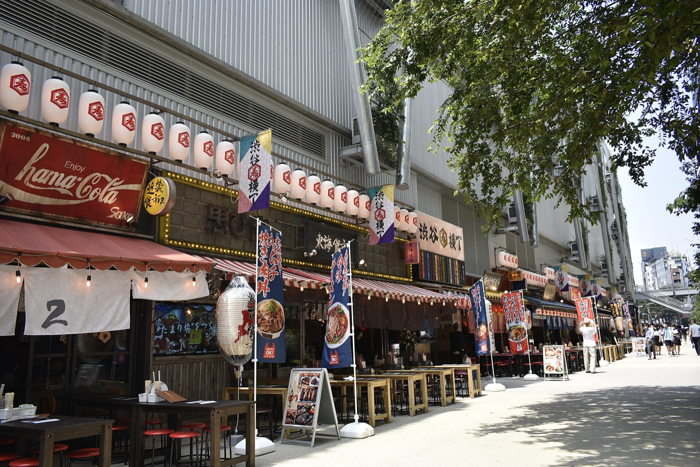
Le Yokocho, au rez-de-chaussée de Miyashita Park. Les lanternes rouges marquent l'entrée. Plan B, si tout est plein : Uobei Shibuya Dogenzaka, le sushi « high-tech » : vous commandez sur un écran et les assiettes arrivent sur un rail à votre place, ¥150 la paire. Vous vouliez de la tech, vous en mangerez. Plan C : Ichiran Shibuya, le ramen en cabine individuelle, ouvert 24 h/24. - 14 h 30
Miyashita Park, puis Bic Camera
Le parc sur le toit, puis Bic Camera Shibuya : sept étages de téléphones, appareils photo, gadgets et objets qu'on ne voit qu'ici. C'est là que vous pouvez prendre le 70-200 en main (section suivante). Si le temps reste, le Mega Don Quijote, le bazar ouvert 24 h/24.
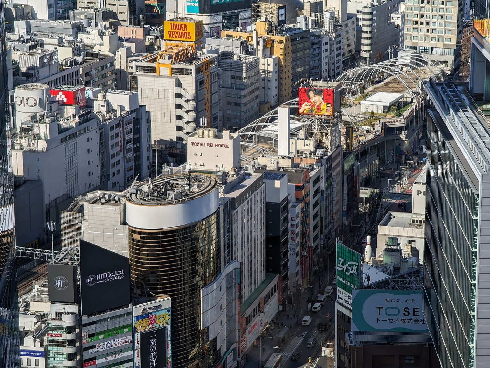
Miyashita Park : un parc posé sur un centre commercial, le Yokocho en dessous. Plan B, si vous êtes à plat : sautez Bic Camera (vous irez à Map Camera à Shinjuku un autre jour, c'est mieux pour l'objectif) et finissez au Mega Don Quijote : 5 étages de bazar, le Japon en concentré, et ça se visite à moitié endormi.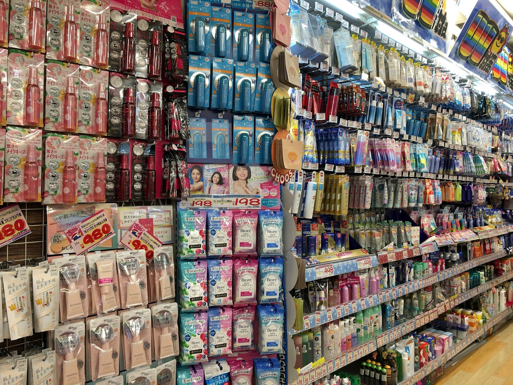
Le Don Quijote de Shibuya. Ouvert 24 h/24, musique à fond, tout et n'importe quoi. - 15 h 30
Retour aux casiers
Même chemin : escalator du 109, B1 ou B2, le code ou la clé. Puis direction l'hôtel : à 16 h vous êtes dans la chambre.
L'acheter ici plutôt qu'en France : oui, à une condition
Le FE 70-200 mm F2.8 GM OSS II (SEL70200GM2) est à 2 799 € sur le store Sony France. À Tokyo, même objectif neuf, garantie Sony Japon :
| Où | Prix affiché | Après remboursement de la taxe |
|---|---|---|
| Map Camera, Shinjuku | ¥346 500 | ¥315 000 ≈ 1 790 € |
| Bic Camera Shibuya ou Yodobashi | ¥385 000 | ¥350 000 ≈ 1 985 €, plus 10 % en points |
Taux du jour : 1 € = 176 ¥. Soit 800 à 1 000 € de moins qu'en France. Kakaku, le comparateur japonais, affiche des revendeurs vers ¥277 000, mais en ligne : pas vérifié en boutique.
- Où l'acheter. Map Camera (Shinjuku, 10 minutes de Yamanote depuis Shibuya, ouvert 10 h 30 à 20 h 30) est le moins cher en neuf, et le spécialiste : ils ont aussi l'occasion notée par état. Bic Camera Shibuya est sur votre chemin aujourd'hui pour le prendre en main et vérifier le stock.
- Ce que vous perdez. La garantie est japonaise (un an, SAV au Japon). Et en rentrant en France, un achat de plus de 430 € doit en principe être déclaré en douane, avec 20 % de TVA : même déclaré, ¥315 000 + 20 % ≈ 2 150 €, toujours sous les 2 799 €.
- Mon avis. Prenez-le à Map Camera, pas aujourd'hui : vous avez les valises et la fatigue. Un matin de cette semaine, avec le passeport. Aujourd'hui à Bic Camera, vous le testez sur votre boîtier et c'est tout.
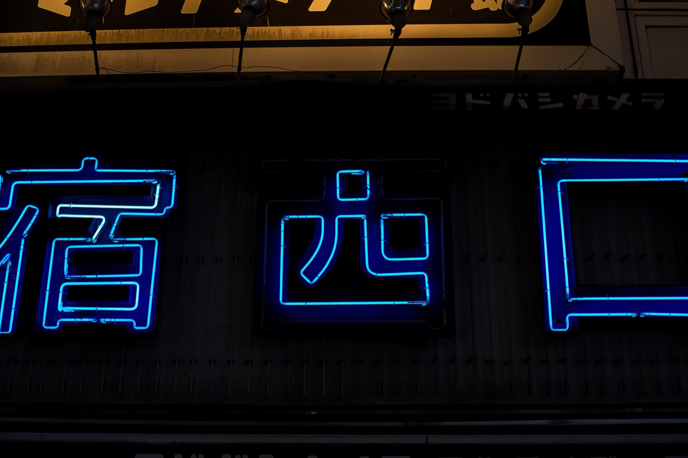
Vous avez dormi comment dans l'avion ?
Touchez votre état, le plan s'ajuste.
Gardez le café en haut du Scramble et le PARCO. Sautez Shibuya Sky (vous le ferez un autre soir au coucher du soleil) et Bic Camera. Après le déjeuner, Miyashita Park au soleil, puis l'hôtel dès 15 h pour demander un check-in anticipé : souvent ça passe.
Le plan tel qu'il est écrit. Une seule règle : pas de sieste avant 21 h, c'est ce qui vous cale sur l'heure du Japon dès demain.
Ajoutez Harajuku : une station de la Yamanote depuis Shibuya, ou 15 minutes à pied par la rue Cat Street. Takeshita Street, puis retour par Omotesando. Et gardez Akihabara, la vraie Mecque de la tech, pour une journée entière cette semaine.
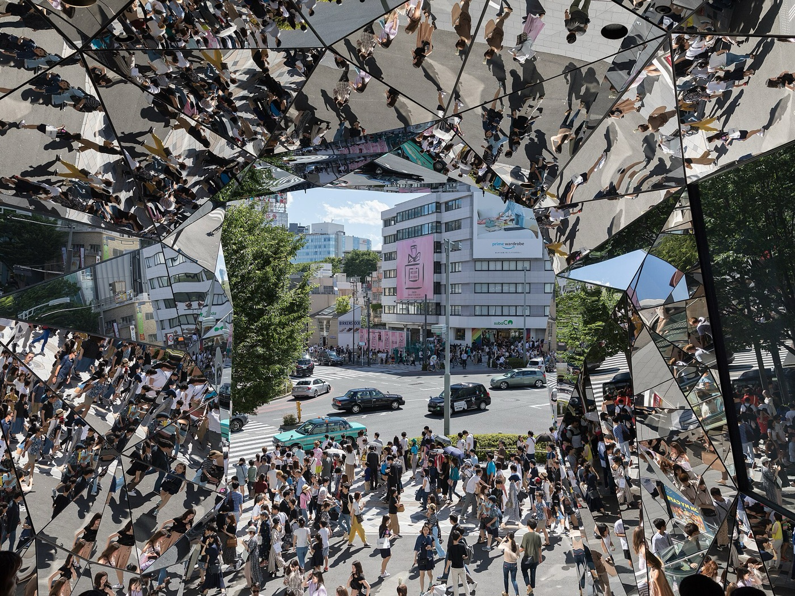
Cinq choses à savoir avant de sortir
- Météo. Mi-novembre à Tokyo : 10 à 17 degrés, sec, ciel souvent clair. Une veste suffit, la nuit tombe à 16 h 30.
- Argent. La carte passe presque partout, mais gardez ¥5 000 en liquide. Les distributeurs des 7-Eleven acceptent les cartes étrangères.
- Internet. Vérifiez que l'eSIM Japon est active avant de quitter l'aéroport. Il y a du Wi-Fi gratuit à Narita pour la configurer.
- Déchets. Il n'y a presque pas de poubelles dans la rue. On garde ses déchets jusqu'au prochain konbini.
- Marcher. À gauche sur les trottoirs et les escaliers. Et on ne mange pas en marchant.
Préparé le 16 novembre 2026 au matin. Tarifs du train vérifiés sur le site JR East le jour même ; casiers et comptoirs : guide Navitime mis à jour en juillet 2025. Horaires d'ouverture indicatifs : PARCO 11 h, Bic Camera 10 h, Shibuya Sky 10 h. Prix du 70-200 relevés le 16/11 sur mapcamera.com, biccamera.com, yodobashi.com et sony.fr ; détaxe : Agence japonaise du tourisme. Photos Wikimedia Commons : scramble : しんぎんぐきゃっと (CC BY-SA 4.0) · hachiko : Joli Rumi (CC BY-SA 4.0) · 109 : auteur non indiqué (CC BY-SA 3.0) · sky : Stephen Kelly from San Francisco, CA, USA (CC BY 2.0) · scramble-square : Benh LIEU SONG (Flickr) (CC BY-SA 2.0) · parco : Cabeza2000 (CC BY-SA 4.0) · nintendo : IagoQnsi (CC BY 4.0) · miyashita : Syced (CC0) · donki : 毒島みるく (CC0) · yokocho : 江戸村のとくぞう (CC BY-SA 4.0) · nex : 名無し野電車区 (Nanashino Denshaku) (CC BY-SA 3.0) · takeshita : Basile Morin (CC BY-SA 4.0) · yodobashi : Dick Thomas Johnson from Tokyo, Japan (CC BY 2.0)